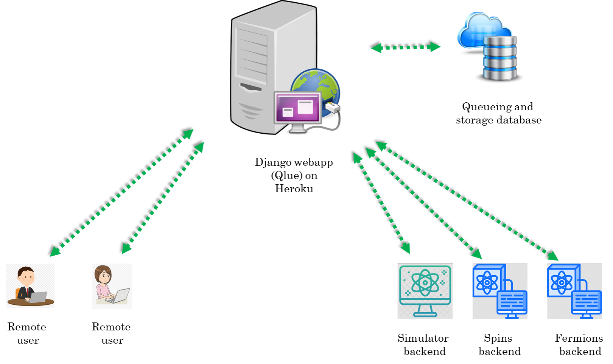
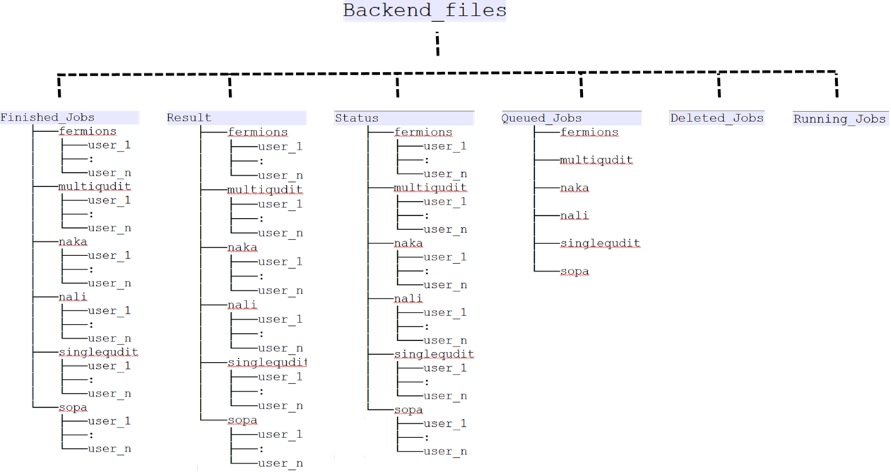
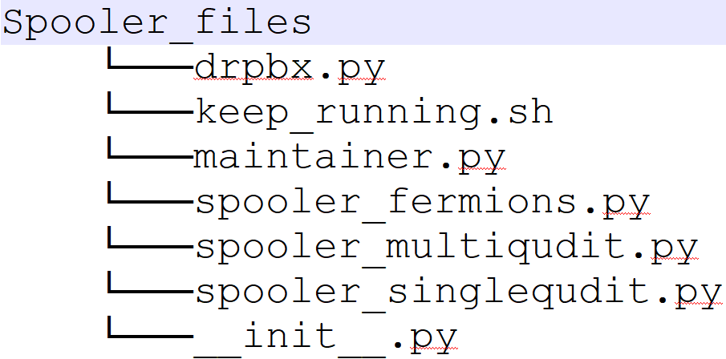

General description
The big picture
The idea for developing qlue stems from the desire for unifying experiment execution on different platforms for quantum simulation/computation. These platforms can be based on different technologies (e.g. neutral atoms, ions, superconducting qubits, photonic systems etc.) and have different software for experiment control.
In this diversity there is a unifying feature for different experiments, they essentially act as a backend for executing some instructions. On adopting this picture we quickly realise that we become totally agnostic to the details of how the instructions are executed on a hardware if we can provide a general higher level description of the experiments. A very suitable high-level description for experiments on different platforms is to think of these experiments as quantum circuits. In this picture any experiment essentially has three steps : state preparation, unitary evolution under a given Hamiltonian and measurement. Infact we are not just limited to experiments anymore and can even include theoretical simulator backends which execute the quantum circuits on a computer.
For providing software support for a given backend to use the language of quantum circuits, two types of libraries are required : one which allows to write quantum circuits for the experiments using some kind of quantum circuit framework and a second one for parsing the quantum circuits into a format which can be run on the experiment. For the first one, there already exists quantum circuit frameworks like Qiskit, Pennylane etc. which provide a comprehensive support for writing quantum circuits. For the second one, custom code has to be written which will depend on the details of the particular backend.
Another important point is that we assume that the user who writes the quantum circuits does not necessarily have local access to experiments. So the user submits quantum circuits to the backend remotely over the internet. We use the word job for the submissions by the remote user. Therefore, we also need a service which can act as the central point for various remote users to submit their jobs or fetch the result/status of their previously submitted jobs. For security reasons this service should provide robust user management and authentication.
To address the issue we have developed a web interface called qlue which allows remote users to submit their jobs to remote cold atom backends. This architecture has several advantages :
- The same circuit can be executed on different backends.
- Makes collaboration between researchers easier.
- A nice tool for teaching.
A use case
We want to use our quantum computing backends as platforms for executing experiments written as quantum circuits. These backends can be a real cold atom machine or a simulator running on a computer . But how will the backend understand a quantum circuit? For e.g. in our experiment we use the labscript suite to control all hardware and for data analysis. We need to tackle the following issues:
- Labscript suite does not have native support for writing quantum circuits.
- We want to allow remote users to be able to submit jobs to our backends. So we need a server architecture and user management.
The above issues can also exist for a simulator package. Hence the need for this project. There are two sides : client and server.
The client
A client is a remote user who will write quantum circuits in the user's favorite quantum circuit framework (Qiskit/Pennylane/something_else). These circuits then have to be compiled into JSON files. The JSON files can be sent over the internet to a remote server which will queue it for parsing/execution on the backend. The backend can be a real cold atom machine or a simulator running on a computer. To get credentials, user has to create an account at qsimsim.synqs.org.
We have decided on a schema for the JSON files. See 1 for more details. The document mentions in detail how things should be formatted.
The plugin for compiling Qiskit circuits to JSON files is available at qiskit-cold-atom. Similarly the plugin for compiling a pennylane circuit into JSON is available at pennylane-ls. Note that the pennylane plugin at pennylane-ls already offers several backends. Each backend is a device with its own operations.
That's all that is required on the client side. Basically choose one of these frameworks. If the client wants to use a different quantum circuit framework, then the client must write appropriate code for compiling quantum circuits of that framework into JSON files which follow the schema of 1.
The server
Here we describe 3 parts:
- The Django app (qlue).
- The Dropbox storage.
- The backends.

The Django app (qlue)
The Heroku platform hosts our Django app. Django is a Python-based free and open-source web framework. It uses the Model-View-Template architecture:
- Model : Build databases from classes with the help of Object Relational Mapper (ORM).
- View : Function executed whenever a particular URL receives an HTTP request. For every URL there is a corresponding view function.
- Template : HTML/CSS code for inserting web elements in a HTML document.
Note that Django is just a framework to design web-apps. Its not a server by itself. After writing a webapp it has to be hosted on a server. Although, Django also comes with a built-in server but this is meant only for local testing and development. In production environment one must use a proper server like Apache web server, Gunicorn, waitress etc. to host the webapp. For e.g. our Django app is hosted on a Gunicorn server on the Heroku platform.
Another point is that although we have a Django webapp running on our server, it is functionally equivalent to a REST API. REST API is a popular architecture of communicating with remote servers. Django Rest Framework is widely used for writing such REST APIs.
Before describing the server in detail, lets mention that for the client, communicating with the server essentially boils down to sending correct HTTP request to the correct URL. Then on the server side Django will execute the view function corresponding to that URL. The structure of a general URL looks like :
server_domain/requested_backend/appropriate_view_name
So for example if the server_domain=https://qsimsim.synqs.org/api/, and we want to use post_job view for the fermions backend i.e. requested_backend=fermions and appropriate_view_name=post_job. The complete URL will look like :
https://qsimsim.synqs.org/api/fermions/post_job/
Now we explain different view functions and their purpose :
- The get_config view : This function returns a JSON dictionary containing the backend capabilities and details. At the moment this is relevant only for the Qiskit plugin as the pennylane plugin does not make use of it.
- The post_job view : This function extracts the JSON dictionary describing a potential experiment from a HTTP request. The extracted job_JSON is dumped onto Dropbox for further processing. It then responds with another JSON dictionary which has a
job_idkey. This job_id is important to query the server for results of the experiment later on. A typical JSON response from the server has the following schema:{'job_id': 'something','status': 'something','detail': 'something'} - The get_job_status view : This function extracts the job_id of a previously submitted job from a HTTP request. It responds with a JSON dictionary describing the status.
- The get_job_result view : This function extracts the job_id of a previously submitted job from a HTTP request. If the job has not finished running and results are unavailable, it responds with a JSON dictionary describing the status. Otherwise it responds with a JSON dictionary describing the result. The formatting of the result dictionary is described in 1.
- The get_user_jobs view : This function returns a JSON dictionary containing all the jobs a user has submitted to this particular backend.
- The get_next_job_in_queue view : This function is not available to regular users. It is a very special function and is reserved for use only by the Spooler machine. Basically Spooler machine is the computer which is running the Spooler. It asks the server for the next job it should work on and the server replies with a JSON dictionary with details of the next job to be executed. From this, the Spooler knows exactly where the job JSON file is stored on Dropbox. It fetches the job JSON and starts to process it. Note that different Spoolers exist for different backends.
We will frequently use the term status dictionary and result dictionary. These are just text files which host the appropriate JSON data. These files are stored on the Dropbox like job_JSON. When a view reads these text files, it coverts the data in them to a python dictionary and sends it to the client or modifies the dictionary further before saving it back to the text file.
Since we use Dropbox to store JSONs, the view functions call functions written in a file called storage_providers.py which in turn calls Dropbox python API functions for reading and writing to Dropbox. Note that Dropbox can be replaced with any other storage service (like Amazon S3, Microsoft azure storage, Google cloud storage etc.) which allows a user to read and write content using a python API. For this one would need to implement four basic functions for accessing the cloud storage provider. The details of these four functions are given in storage_providers.py with an example implementation for Dropbox. A new storage service can have its own class inheriting from the base class (just like the Dropbox class) and override the base functions.
The Dropbox storage
We use Dropbox to store all our JSONS. This approach has several benefits:
- We immediately implement asynchronous job management. Basically the Heroku server dumps the job coming from the remote client onto Dropbox. Then whenever the Spooler belonging to a backend is free, it will query to
get_next_job_in_queueview and act on the next job which is appropriate for that particular backend. - Dropbox also serves as a database storage for various JSONs, like job_JSON, result_JSON, status_JSON etc. It gives us 2 GB free storage which is a lot considering price of commercial database alternatives.
- It allows us to unify the workflow for both simulator and real machine. Basically it does not matter what the backend is, the workflow is the identical. Different backends only differ in their Spoolers.
Now we describe how the Dropbox folder structure is organized. It is shown in following picture: 
If one plans to replace Dropbox with other storage service, then one needs to implement a folder/naming structure similar to above.
Now lets give an example about the work flow. Lets say a remote client named user_1 submits a job to the singlequdit backend. This means user_1 sent a post request to the following URL:
https://qsimsim.synqs.org/api/singlequdit/post_job/
The server will immediately save the JSON to Dropbox at Backend_files/Queued_Jobs/singlequdit/job-20210906_203730-singlequdit-user_1-1088f.json. The JSON file name has special meaning as will be explained later. The file is stored here temporarily before spooler processes it. At the same time the server will reply to the user with a job_id response which might look something like :
{'job_id': '20210906_203730-singlequdit-user_1-1088f','status': 'INITIALIZING','detail': 'Got your json.'}
This dictionary is also saved as a status JSON at Backend_files/Status/singlequdit/user_1/status-20210906_203730-singlequdit-test-1088f.json. Note the name is quite similar to the job JSON except a status- prefix.
The job_id key-value has lot of information. It has the UTC date and time of creation of the job 20210906_203730 which means it was created on 6 September 2021 at 20:37:30 PM UTC time. The job_id also has the user name who created this job i.e. user_1 and the backend where this job is supposed to be executed i.e. singlequdit. At the end the job has some random alpha-numeric string of 5 characters.
On the spooler side, it will query the server for the next job it should work on. Also let us suppose the spooler is querying about the next job for singlequdit backend. The server looks for the file list in the directory Backend_files/Queued_Jobs/singlequdit/. It will choose the first created file from that list. Lets say this is the file job-20210906_203730-singlequdit-user_1-1088f.json. Now the server will move this file from Backend_files/Queued_Jobs/singlequdit/job-20210906_203730-singlequdit-user_1-1088f.json to Backend_files/Running_Jobs/job-20210906_203730-singlequdit-user_1-1088f.json and respond to the spooler with a job_msg_dict which looks like
{"job_id": "20210906_203730-singlequdit-user_1-1088f", "job_json": Backend_files/Running_Jobs/job-20210906_203730-singlequdit-user_1-1088f.json"}
From this, the Spooler knows exactly where the job JSON file is stored on Dropbox. It fetches the job JSON and starts to process it.
For processing the job, the spooler begins by sanity-checking the JSON for correct schema. If the job_JSON fails this check the file is moved to Backend_files/Deleted_Jobs/job-20210906_203730-singlequdit-user_1-1088f.json. The status JSON is also updated by the spooler to:
{'job_id': '20210906_203730-singlequdit-user_1-1088f','status': 'ERROR','detail': 'Got your json.; Failed json sanity check. File will be deleted. Error message : blah..blah'}
From the dictionary, the user is automatically informed about the details of why the error happened.
If however, the job_JSON passes sanity checking, then it is executed. The spooler goes through the instruction list and creates the appropriate circuit and calculates the end result. Then it generates the given number of shots and formats everything into the result dictionary. The schema of the result dictionary is given at 1. Then the Spooler will upload the result JSON to Backend_files/Result/singlequdit/user_1/result-20210906_203730-singlequdit-user_1-1088f.json. It will also move the job JSON from Backend_files/Running_Jobs/job-20210906_203730-singlequdit-user_1-1088f.json to Backend_files/Finished_Jobs/singlequdit/user_1/job-20210906_203730-singlequdit-user_1-1088f.json. Finally the spooler will update the status JSON to:
{'job_id': '20210906_203730-singlequdit-user_1-1088f','status': 'DONE','detail': 'Got your json.; Passed json sanity check; Compilation done. Shots sent to solver.'}
This completes the execution of the job and the results are now available.
The backends
The backend can be a real cold atom machine or a simulator running on a computer. In summary, the backend runs a spooler which is responsible for executing job_JSONs and updating status_JSONs and result_JSONs. However different backends have different Spoolers. The Spoolers of different simulator backends have similar structure. The experiment backends have slightly different implementation of spoolers. This is because simulators and real machine operate in different conditions. We first describe the simulator backend and then the experiment one.
The simulator backend
This is just a PC running spooler(s). The directory structure of Spooler is: 
The important file is the maintainer.py. It runs an endless while loop. Every 2 seconds The maintainer.py asks the serevr for the next job to be executed for a particular backend. If the server replies with a job, the maintainer will execute the appropriate Spooler.py file for that backend. If the server replied with empty response then the loop continues and maintainer.py will ask for job for the next backend defined in the list backends_list.
Lets consider the case where the server replied with a job name. The maintainer will download the contents of this job_JSON and also the status_JSON. Both the job dictionary and status dictionary are passed as an argument to the add_job function of the appropriate Spooler for that backend.
The add_job function will perform sanity check on the JSON and execute the circuit. Then it will upload all results and status accordingly. The details on how exactly the circuits are executed will be described in future.
Also note that for reading writing to Dropbox on the Spooler PC too use Dropbox python API. The commands are in the file drpbx.py
There are some important points to note here:
- The maintainer.py is a python program. It might very well crash and then our simulator is no longer executing circuits. Although the server is still fine and storing jobs properly but the jobs will be in waiting queue as long as the Spooler is dead. As a quick fix to this problem, we do not run the maintainer.py file directly. Instead we have a bash script
keep_running.shwhich runs the maintainer.py in a loop. If python file crashes the bash script will automatically restart it. This is a temporary fix for now and will be replaced by a more professional solution usingcronorsupervisordin near future. - The spooler is a virtual machine (VM) living in the cloud. We need a professional way to deploy the code on the VM. This support also will be included in near future where whenever a developer makes a push to the Spooler github repository
coquma-sim-spooler, the new files are automatically copied and deployed to the VM.
All code for the spoolers is in a separate GitHub repository which we will make public later on.
The experiment backend
A first draft for implementing the experiment backends is highlighted here. The code was tested to perform MOT loading in a cold atom machine in Heidelberg by submitting circuits from Zurich. Although we still need to polish this part of the code, it already highlights important ideas on how to connect a real cold atom machine to qlue.